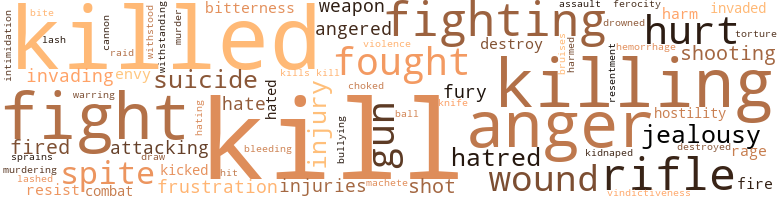

Patternmaster, by Butler, Octavia (1976)
2 music-related terms matched in this text.
Most frequent terms in this topic: vocal (1); line (1)
tune.n.01
Definition: a succession of notes forming a distinctive sequence
| word | sentence |
|---|---|
| line | He looked back to verify the impression and saw them first as a line , then as a wave coming over the crest of a hill , far too close behind the fleeing horses . |
vocal_music.n.01
Definition: music intended to be performed by one or more singers, usually with instrumental accompaniment
| word | sentence |
|---|---|
| vocal | Joachim ran the words on both the vocal and mental level for emphasis . |
396 violence-related terms matched in this text.
Most frequent terms in this topic: kill (85); killed (47); killing (26); anger (24); fight (22)
anger.n.01
Definition: a strong emotion; a feeling that is oriented toward some real or supposed grievance
| word | sentence |
|---|---|
| anger | He pushed aside his anger at Coransee and followed Jackman up to the fourth-floor mute quarters , where his new room would be . |
| anger | Teray watched her , concerned that she would anger Coransee with her stubbornness ; though Teray took secret pride in that stubbornness . |
| anger | Thus , periodically , in perverted anger and frustration , Jason beat the mute woman almost to death . |
| anger | For a moment Coransee stared at him in cold anger , stared at him as though he was an unwelcome intruder breaking into a private conversation . |
| anger | There was neither surprise nor anger in her voice . |
| anger | Even his anger was more at his own helplessness , and at Coransee , than at her . |
| anger | Felt the anger and the hurt that Iray had caused him ebbing , not vanishing completely but retreating , shrinking so that it no longer occupied his whole mind . |
| anger | " Well , Leal had reason to react with jealousy , but I . . . " " Jealousy , anger , humiliation . |
| anger | Cold anger washed over him but his tone was mild , quiet . |
| anger | He felt the anger drain out of him to be replaced by something else . |
| anger | Something he could not quite name but that was far less comfortable than even the anger had been . |
| anger | It lessened to anger , humiliation , hatred . |
| anger | The Housemaster had apparently gotten over his anger - or he remained angry only at Amber . |
| anger | But through the reestablished link he could feel her smoldering anger . |
| anger | The anger flared for a moment . |
| anger | Now Teray felt anger of his own . |
| anger | And he was shaking with anger - anger at himself . |
| anger | And he was shaking with anger - anger at himself . |
| anger | The intensity of Joachim 's anger burned into Teray . |
| anger | She stood leaning against him , radiating her anger . |
| anger | She seemed to surrender to the fear that she had been holding at bay with her anger . |
| anger | She radiated more anger than fear . |
| anger | Now he spoke quietly with anger . |
| anger | Hot with shame and anger , Teray struck . |
anger.v.02
Definition: become angry
| word | sentence |
|---|---|
| angered | He had already angered her , apparently . |
| angered | Maybe the Housemaster 's lies had angered him more than they should have . |
| angered | But it angered him . |
attack.v.02
Definition: attack in speech or writing
| word | sentence |
|---|---|
| attacking | Attacking her is the same as attacking me . " |
| attacking | Teray glared at him , hearing the challenge , ignoring it " You stood beside her today and tried to talk her into attacking me . |
| attacking | The only thing that kept him from attacking me outright to take the Pattern was the belief that it would come to him without a struggle if he waited a little longer . |
battle.v.01
Definition: battle or contend against in or as if in a battle
| word | sentence |
|---|---|
| combat | Its first purpose was supposed to be to give the Patternmaster the strength he needed - strength drawn through the links from the Patternists - to combat large-scale Clayark attacks . |
bleeding.n.01
Definition: the flow of blood from a ruptured blood vessel
| word | sentence |
|---|---|
| bleeding | Pain , profuse bleeding , no one could miss those . |
| hemorrhage | Without understanding quite how he knew , Teray realized that he had just avoided - or at least postponed - a cere - bral hemorrhage . |
bruise.n.01
Definition: an injury that doesn't break the skin but results in some discoloration
| word | sentence |
|---|---|
| bruises | " She made me eat and took away my weariness and healed the bruises and sprains I had gotten thrashing around during my transition . |
bullying.n.01
Definition: the act of intimidating a weaker person to make them do something
| word | sentence |
|---|---|
| intimidation | " Lord , are you admitting that you used such intimidation ? " |
cannon.n.04
Definition: heavy automatic gun fired from an airplane
| word | sentence |
|---|---|
| cannon | And once it 's programmed , the Clayarks could fire a cannon next to it and the programming would hold . |
defy.v.01
Definition: resist or confront with resistance
| word | sentence |
|---|---|
| withstood | Teray 's shield withstood the blow . |
| withstanding | his shield withstanding the assault but his senses reeling . |
destroy.v.04
Definition: put (an animal) to death
| word | sentence |
|---|---|
| destroy | Teray kept his attention on the link , making certain that Jackman was aware of it and that he saw that it was under his control , that lie could indeed destroy it . |
| destroyed | I 'm surprised that his friends did n't have you declared defective so that you would be destroyed before you gained your adult rights . |
| destroy | " I had it doubled into a fist when the Clayark fired , and the bullet hit at just the right angle to destroy it . " |
draw.v.23
Definition: pull (a person) apart with four horses tied to his extremities, so as to execute him
| word | sentence |
|---|---|
| draw | My lead wife can draw strength from everyone in the House for defense . |
drown.v.04
Definition: kill by submerging in water
| word | sentence |
|---|---|
| drowned | Nearer , the waves broke against sand and rocks with a noisy vigor that sometimes drowned out what Amber was saying . |
envy.n.01
Definition: a feeling of grudging admiration and desire to have something that is possessed by another
| word | sentence |
|---|---|
| envy | Teray had heard him spoken of with admiration and envy , but never with bitterness . |
| envy | Teray could see why it was the envy of many lesser lords , and why Coransee had risked fighting a duel for it several years before . |
ferocity.n.01
Definition: the property of being wild or turbulent
| word | sentence |
|---|---|
| ferocity | He hammered at Teray 's shield with a ferocity that left Teray able to do nothing more than maintain that shield and endure . |
fight.n.02
Definition: the act of fighting; any contest or struggle
| word | sentence |
|---|---|
| fighting | It was strange fighting , repelling somehow . |
| fighting | Joachim 's people were able to form themselves into the deadly fighting machine that Clayarks avoided only because Joachim chose them so carefully . |
| combat | Dying by a Clayark bullet would be the same as dying in combat with Coransee . |
| fighting | If she had been still linked with him , she would already know , and her emotional reaction would alert Coransee - and the fighting might already be over . |
fight.n.05
Definition: a boxing or wrestling match
| word | sentence |
|---|---|
| fights | Privileges and possessions were wagered on these fights . |
| fight | She talks a good fight . " |
| fight | Everything Coransee did made Teray more aware of how little chance he had of surviving a fight with the Housemaster . |
| fight | Some of them , Rain in particular , clearly resented him , but they had seen him kill their Housemaster in a fair fight . |
| fight | I do n't want to be a thing won in a fight . |
fight.v.02
Definition: fight against or resist strongly
| word | sentence |
|---|---|
| fight | I 'll fight for that . |
| fight | Having two mutes fight each other , for instance , until one of them was so mutilated and broken that he could no longer control his body enough to fight on . |
| fight | Having two mutes fight each other , for instance , until one of them was so mutilated and broken that he could no longer control his body enough to fight on . |
| fighting | Teray could see why it was the envy of many lesser lords , and why Coransee had risked fighting a duel for it several years before . |
| fought | His name had attracted attention before but he had fought for it and won the right to keep it while still in school . |
| fight | That 's why I 'd rather run away from him than fight him . " |
| fought | It was the way people who were close in the Pattern fought best . |
| fought | The way Joachim 's House fought , the way everyone fought in war when Rayal used the power that he held . |
| fought | The way Joachim 's House fought , the way everyone fought in war when Rayal used the power that he held . |
| fight | " I wanted to see you fight in a situation where there was no immediate danger , " she said . |
| fighting | " Not handle the fighting yourself from now on ? " |
| Fight | Fight them on their own terms and sooner or later they 'll get you . |
| fighting | " It would be best for you , " said a small , white-haired woman in the center of the seven , " if you came with us without fighting . " |
| fighting | " And , " the woman continued over Amber 's words , speaking to Teray again , " I do n't believe you 're the kind to let someone else do your fighting for you . " |
| fight | I could have given my life for you back there if we had had to fight . |
| fought | His people made the rifles with which other Clayarks hunted food and fought Patternists . |
| fighting | She sat hunched over , coughing blood , fighting desperately to keep herself alive . |
| fighting | " Of course , " said Coransee to Teray , " you can have it all if you decide to stop fighting me . |
| fight | " If you decide to fight , I 'll stand with you , " he said . |
| fight | All that means is that I 'll have to fight him in the way I intended to from the first . |
| fighting | " If you had come up and found me fighting for my life , you would have finished me off . " |
| fighting | I 'd have time to learn the kind of fighting that they do n't teach in school . |
| fight | I 'll let myself be brought into Forsyth , fight him there , if you 'll give her sanctuary . |
| fought | Surprisingly , he fought Clayarks in the way Teray had before he 'd learned Amber 's way . |
| fight | She could fight . |
| fought | Her last words echoed Iray 's months before , when he had fought Coransee for the first time . |
| fought | Teray fought with savage desperation , unable to believe what was happening . |
| fight | He could still fight With his last strength , Teray swept through the struggling Housemaster 's brain . |
| fighting | Very carefully , he pushed her into unconsciousness - that to prevent her from wasting her strength fighting him . |
| fought | Not unless I fought him . |
| fight | / did n't dare fight him . |
| fight | But their people fight as individuals , and we fight as one . |
| fight | But their people fight as individuals , and we fight as one . |
| fight | You would n't even have to fight . " |
| fighting | " If you can just accept it , stop fighting Coransee , he can teach you more than I ever could . |
| fight | Yet he had to fight . |
| fight | But did he have to fight now ? |
| fight | He had to fight now . |
| fought | I would have let you spend the night here with Iray like a guest , and you could have fought me in the morning when you were rested . " |
| fighting | Perhaps he too wished to end the fighting quickly . |
| fighting | And if it was possible for Teray to live the kind of life he had planned for himself without fighting , he would rather not challenge his brother again . |
frustration.n.03
Definition: a feeling of annoyance at being hindered or criticized
| word | sentence |
|---|---|
| frustrations | They knew , as he did , that it would be nothing new for an angry Patternist to take out his frustrations on the nearest mute . |
| frustration | Thus , periodically , in perverted anger and frustration , Jason beat the mute woman almost to death . |
| frustration | Think of the damage Coransee could do if he really gave way to his frustration . " |
fury.n.01
Definition: a feeling of intense anger
| word | sentence |
|---|---|
| rage | Jackman glared back at him , livid with rage . |
| rage | Then , slowly , the rage dissolved into weary submission . |
| fury | The contained fury he sensed in her alarmed him . |
| fury | In that direction lay fury , recklessness , death . |
| fury | He shook his head silently , his body suddenly trembling with shame and fury . |
gag.v.06
Definition: cause to retch or choke
| word | sentence |
|---|---|
| choked | He gave a choked cry , screened himself from the pain , and hurried to the door . |
gun.n.01
Definition: a weapon that discharges a missile at high velocity (especially from a metal tube or barrel)
| word | sentence |
|---|---|
| guns | That 's what they 're trying to do to us with their guns . |
| gun | I want a look at the gun he was using . " |
| gun | " Brother , by the sound of that gun , it was n't the kind that the Clayarks usually use against us . |
| gun | Be my alarm in case the gun gives him foolish ideas . |
| guns | Either the long period of Rayal 's illness had given them time to improve their weaponry or they were simply bring - ing out their best guns - and their best marksmen - to kill two of Rayal 's sons . |
| gun | " What shall we do with the gun ? " said Amber . |
| gun | " The gun has three bullets left in it . " |
| gun | It will be us destroying the gun . |
| gun | As the fire heated the metal of the gun 's receiver , Amber extended her perception into the metal itself and observed minutely the reaction of the metal to the fire - how it changed as it heated . |
| guns | There seemed to be more of them now , shooting their guns at odd moments , sometimes singly , and sometimes in such large numbers that they sounded like a battle in progress all by themselves . |
harm.v.01
Definition: cause or do harm to
| word | sentence |
|---|---|
| harmed | " A Clayark would n't be harmed at all if you hit him ? " |
hate.n.01
Definition: the emotion of intense dislike; a feeling of dislike so strong that it demands action
| word | sentence |
|---|---|
| hatred | The Clayark gasped at the sudden pain of the cramp , half collapsed , righted itself , and glared at Teray in silent hatred . |
| hatred | Teray stared at him in silent hatred . |
| hatred | She fell to one knee , and stared her hatred at him . |
| hatred | It lessened to anger , humiliation , hatred . |
hate.v.01
Definition: dislike intensely; feel antipathy or aversion towards
| word | sentence |
|---|---|
| hate | And knowing , she had a right to hate him . |
| hate | You hate him for what he 's done to me ! |
| hate | Teray could n't decide whether to like her , tolerate her , or hate her . |
| hated | " Leal would n't have hated her for that if she had gone to him instead of to me . |
| hating | He linked , furious with her , half hating her , feeling no gratitude at all . |
| hated | He had hated Coransee . |
hostility.n.01
Definition: a hostile (very unfriendly) disposition
| word | sentence |
|---|---|
| hostility | " Do you feel any hostility in me , Amber ? " |
| hostility | There was no hostility in his voice . |
hurt.v.04
Definition: cause damage or affect negatively
| word | sentence |
|---|---|
| hurt | None of them seemed to be hurt . |
injury.n.01
Definition: any physical damage to the body caused by violence or accident or fracture etc.
| word | sentence |
|---|---|
| injuries | He was not especially concerned about the strong bullying the weak , as long as the weak were not left with serious injuries - and as long as both strong and weak obeyed him when he spoke . |
| harm | The most important thing he had gotten from Jackman was a thorough knowledge of how much mental force mutes could tolerate without harm . |
| injuries | And she had internal injuries . |
| injury | There was nothing permanently wrong with him , no physical injury at all . |
| hurt | Felt the anger and the hurt that Iray had caused him ebbing , not vanishing completely but retreating , shrinking so that it no longer occupied his whole mind . |
| hurt | The link betrayed her hurt . |
| injuries | She healed any injuries she found before they became serious , seeing to it , as she said , that they did not wind up on foot , and Clayark bait . |
| injury | But little things , especially things that are caused by disease instead of injury - I ca n't sense them . " |
| injury | Her injury bothered him because healing it would leave her weakened . |
| hurt | His head hurt . |
| injury | He was completely occupied with his injury . |
| harm | Coransee was so occupied with keeping Teray subdued that he wanted physical contact to help him focus a second kind of attack , and do physical harm . |
invade.v.01
Definition: march aggressively into another's territory by military force for the purposes of conquest and occupation
| word | sentence |
|---|---|
| invading | He was n't doing to Jackman quite what Coransee wanted to do to him , but he was invading Jackman 's mental privacy . |
| invading | For instance , he knew what the muteherd was afraid of , knew what he could do to help him , and , perhaps to some degree , make up for invading his privacy . |
| invaded | But they did n't take care of themselves very well if they let themselves be invaded by so many Clayarks . |
| invaded | Teray tried to rid himself of the sensation of being mentally invaded . |
| invading | He was almost used to Coransee invading his mental privacy by now . |
jealousy.n.01
Definition: a feeling of jealous envy (especially of a rival)
| word | sentence |
|---|---|
| jealousy | Teray let his curiosity be felt partly because he was actually curious , and partly in relief that Joachim too was ignorant of his foolish jealousy . |
| jealousy | Several of Coransee 's wives had begun to look at Iray with open jealousy . |
| jealousy | " Well , Leal had reason to react with jealousy , but I . . . " " Jealousy , anger , humiliation . |
| jealousy | But since she did n't , her House just became more fuel for his jealousy . |
kick_back.v.02
Definition: spring back, as from a forceful thrust
| word | sentence |
|---|---|
| kicked | She leaned against the rock , kicked aside some sand , and vomited into the depression she had made . |
| kicked | She kicked sand into the depression , turned , and came toward them , eating something that Teray had not seen her take from her horse . |
kidnap.v.01
Definition: take away to an undisclosed location against their will and usually in order to extract a ransom
| word | sentence |
|---|---|
| kidnaped | " The raiders killed two of his outsiders and kidnaped a mute . " |
kill.v.10
Definition: cause the death of, without intention
| word | sentence |
|---|---|
| killed | And as it happened , it killed her instead of leaving her to take over for him . |
| killed | Gingerly because animals , like mutes , were easily injured , easily killed . |
| kill | Go ahead and kill me . " |
| kill | " If you 're not even-tempered , you 're going to kill every mute in the House . " |
| killing | I 'm afraid you 're going to wind up killing some of them out of sheer ignorance before you find out how to handle them . " |
| killing | To me , killing one of them is worse than killing one of us , because they ca n't do a damn thing to defend themselves . " |
| killing | To me , killing one of them is worse than killing one of us , because they ca n't do a damn thing to defend themselves . " |
| kill | But I honestly do n't want to kill any of these mutes . |
| kill | " If there was any way for me to kill you , boy , I 'd do it gladly . |
| kill | " Are you going to let him kill you ? " |
| kill | I would n't let anyone kill me ! " |
| kill | An apprentice was the young colt hanging around the edges of the herd , biding his time until he could kill off the old herd stallion and take over . |
| kill | " I 'd like to help you kill him ! " |
| kill | A good healer could destroy the vital parts of a person 's body quickly enough and thoroughly enough to kill even a strong Patternist before he could repair himself . |
| killed | No one actually killed mutes , but certain of the outsiders and women made a grotesque game of coming as close to killing them as they could . |
| killing | No one actually killed mutes , but certain of the outsiders and women made a grotesque game of coming as close to killing them as they could . |
| killed | I do n't think he 'll stop me , though , if all I do is help his muteherd avoid getting killed . " |
| kill | Coransee might get tired of waiting and decide to kill him ahead of time if he stayed . |
| kill | " Not unless you make me kill you , " said Teray . |
| kill | To get it , he had had to kill a powerful woman who had held it for over two decades . |
| kill | " Not kill ? " |
| kill | We would n't kill you if you left us alone . " |
| kills | " Before another Pat-ternist finds you and kills you . " |
| killed | Teray wished he had killed it when he 'd had the chance . |
| kill | " It 's so much easier to hurt or kill than it is to heal , " she said . |
| killing | " Either by controlling me as Joachim is controlled , or by killing me - if I refused to be controlled . " |
| kill | He himself could think of arguments to kill any arguments he might make . |
| killed | " For the same reason Patternmaster Rayal killed the strongest of his brothers and his sister . |
| kill | " Not even if he was going to kill me right now , " said Teray . |
| Kill | Kill yourself . |
| kill | She 's only four or five years out of school , but she managed to kill a man , a Housemaster , before she even made her transition . |
| killed | How could he take her out and perhaps get her killed ? |
| killed | " I do n't want to get her killed . " |
| kill | " I heard you managed to kill a Housemaster even before your mental abilities matured . |
| killing | I want to know how a pre-Pattern child managed not to be executed for killing a person as important as a Housemaster . |
| killed | She did n't tell them anything they did n't already know - just that the killing was an accident , that I was only days away from my transition and my full rights as an adult , that the man I killed should never have been assigned to me anyway . |
| kill | They knew all that , of course , but they were so outraged , and , I think , so ashamed , that I , technically still a child , had managed to kill one of them . . . well they were more after vengeance than justice . |
| killed | The lead wife of the man I killed was there to goad them on . |
| killing | Instead of killing me , they exiled me from the sector . |
| killed | I almost killed her while she was trying to save me . |
| kill | Best to kill them . " |
| killed | Not one Clayark had had time to fire a shot or even get a look at the enemy who killed him . |
| killed | They would have killed him if they could have . |
| kill | They would have been out of range before you could kill them . |
| kill | " Open and let me show you how to kill Clayarks quickly . " |
| killed | In his mind 's eye , he could still see the Clayarks he had already killed . |
| killing | He would not only have to get used to killing them , but he would have to kill more efficiently , in the way that she had shown him , if the two of them were to survive . |
| kill | He would not only have to get used to killing them , but he would have to kill more efficiently , in the way that she had shown him , if the two of them were to survive . |
| killing | And she was still killing , limiting the area of her perception to a long narrow wedge , sweeping that wedge around her like the hand of a clock . |
| killing | " You know , " he said after a while , " your way of killing Clayarks is n't that different from the way we Patternists kill one another . " |
| kill | " You know , " he said after a while , " your way of killing Clayarks is n't that different from the way we Patternists kill one another . " |
| kill | " You just focus differently to kill Clayarks . |
| kill | " But . . . Then why do they teach us in school that you ca n't kill a Clayark the same way you kill a Patternist ? " |
| kill | " But . . . Then why do they teach us in school that you ca n't kill a Clayark the same way you kill a Patternist ? " |
| kill | The only people we can hope to kill by just mindlessly throwing our strength at them are mutes and other Patternists . |
| killed | With Clayarks , you have to know exactly what you 're doing , and do it just right , or you 'll get killed . " |
| killed | A disease that protected its carriers and killed their enemies . |
| killed | Finally , he had been killed by one of his own daughters - she who first created and held a Pattern . |
| killed | If he was unlucky and did have such spirit , it would soon get him killed . |
| killed | Most Housemasters were killed for their Houses long before they reached this woman 's age . |
| kill | " If Coransee catches me , he 'll kill me . |
| kill | '' But I do n't believe you could kill me . |
| kill | I can kill you here and now , no matter who you 're linked with . |
| kill | I can kill you as easily as I 'd kill a Clayark . |
| kill | I can kill you as easily as I 'd kill a Clayark . |
| kill | My people would kill you . " |
| kill | She 's managed to live as long as she has by gathering a solidly united House , and by avoid - ing situations that could kill her . |
| kill | They seemed totally oblivious to the risk to their own lives if they saw a chance to kill their enemies . |
| kill | He began to kill . |
| killed | He found only a few within his range , and those he killed instantly . |
| kill | That would come when for the second time he tried to kill Coransee . |
| kill | Apparently that was more Patternists than the Clayarks thought they could pin down and kill . |
| kill | He 'll kill you . " |
| kill | But he 'll surely kill you alone . " |
| kill | He 's dead wrong , but he 's still going to kill you . |
| killed | If we are n't linked , one of us is liable to get killed , without doing the other any good at all . " |
| kill | Whether you believe it or not , though , I really do n't want to kill you . |
| killed | A wound like that probably would have killed a nonhealer before anyone could do anything about it . |
| killed | " Lord , she 's just recovering from a wound that would have killed anyone else . |
| kill | You know I 'd kill him . " |
| kill | " Are you trying to move him out of your way so you can kill me ? " |
| kill | Refuse , and I 'll have to kill you here and now . " |
| kill | " I was going to try to kill him tonight while he slept . |
| kill | The way we kill Clayarks . |
| killed | " At this point , " said Amber softly , " I think he would have killed me regardless of the damage I 'd do him before I died . |
| Killed | Killed me and left me here . |
| kill | But as for the Clayark who identified you , you did kill it , did n't you ? " |
| killed | " The raiders killed two of his outsiders and kidnaped a mute . " |
| kill | You 're pushing her even though you know that if she attacks you out here , miles from anywhere , you might kill her , but not before she 's mortally injured you . " |
| kill | He 's taking you to Forsyth to kill you . |
| killed | " But he could have killed me back at Redhill . " |
| killed | " I hope to heaven they killed the mute too , " said Joachim . |
| kill | " Hell , he has the right to kill it if he wants to - since he claims us and he has n't given us permission to have a child . " |
| killed | I ca n't understand why he has n't killed it already . " |
| killing | " How did you keep him from killing the baby ? " |
| kill | " He told you he would kill it in Forsyth ? " |
| kill | " I think he only wants to kill it out of vindictiveness - because I refused to have a child for him . " |
| killing | Or it would be a part of him that survived even if Coransee succeeded in killing him . |
| Killed | " Killed him quickly , I mean . " |
| killed | He 'll be sure of taking someone with him even if he gets killed . " |
| killing | " Almost provoked Rayal into killing him , you mean . |
| killed | But to get killed trying to snatch it away now would be worse than stupid . " |
| kill | " If you kill him , well and good , " she said . |
| kills | And if he kills you , he 'll still claim me . |
| kill | He 'll kill our child and then he 'll have to kill me . |
| kill | He 'll kill our child and then he 'll have to kill me . |
| kill | " Listen , " he said softly , " if I ca n't kill him , I 'll cripple him . |
| killing | They had to be far worse than his chances of killing Coransee . |
| killing | He snatched more strength from her , reached , stretched , extending their combined perception as far as he could ahead of them , sweeping a wide area , finding and killing a single Clayark . |
| killed | " I killed the Clayark who shot you . |
| kill | Or the Clayarks might kill one of us . |
| kill | Either the long period of Rayal 's illness had given them time to improve their weaponry or they were simply bring - ing out their best guns - and their best marksmen - to kill two of Rayal 's sons . |
| kill | Coransee might make even quicker work of him this time , because this time the Housemaster would be out to kill instead of only to subdue . |
| kill | In fact , even if Teray submitted to Coransee 's controls , Coransee would still be free to kill Amber . |
| kill | Would it be worth Teray 's while to trust Rayal , go on to Forsyth , giving up any hope of leaving a crippled Coransee for Amber to kill ? |
| killed | Especially since if you had n't been caught , you would probably have been killed by Clayarks . |
| kill | The snipers kept well out of the Patternists ' range and fired their rifles more to keep the Patternists on edge than to kill . |
| kill | It was possible that Teray 's kill the day before had made them cautious . |
| killed | He killed all three almost before Teray was aware of them - certainly before Teray could take advantage of Coransee 's momentarily diverted attention . |
| killed | He killed by imitating the action of a bullet and damaging Clayarks ' vital organs . |
| killing | They could not know when the next Clayark with a special rifle would announce himself by killing someone . |
| killed | He realized that she had reached back and killed the wounded horse . |
| killed | Or maybe they were just afraid of all that raw new strength that you could have accidentally killed them with . " |
| killed | You saw how he killed the Clayarks ? " |
| killing | The old way of killing Clayarks - Coransee 's way : the large artery just where it emerged from the heart . |
| killing | He was killing both Coransee and himself , but his awareness had deteriorated to such a degree that he did not realize it . |
| killed | Coransee had all but killed him . |
| killed | He 's freshly killed . |
| kill | Some of them , Rain in particular , clearly resented him , but they had seen him kill their Housemaster in a fair fight . |
| killed | " If we go on through them the way we have , someone will be killed . |
| kill | Instead , I intend to kill the Clayarks . |
| killing | He swept down on them , killing . |
| killed | Before , with Amber , he had killed dozens of Clayarks . |
| killed | Now he killed hundreds , perhaps thousands . |
| killed | He killed until he could find no more Clayarks over all his wide range . |
| kill | If you try it one at a time , you might kill the last ones by giving back too much to the first ones . |
| killed | No doubt he would have if you had n't killed him . |
| kill | It 's the way a healer can kill . |
| killed | Without that method just now , you would have killed at least three of the people you just took power from . |
| killing | Imagine killing thirty per cent of the Pat-ternists in even an average-size House . |
| kill | It would kill me . |
| kill | That will kill me , too , but at least I 'll die alone - not take thousands of people with me . |
| killing | You could n't have kept Coransee from killing me , could you ? |
| killed | Only since I 've become so weak and sick that taking strength from any but the most compatible of my people would have killed me . |
| kill | We kill them all . " |
| kill | He meant to kill as quickly as he could . |
| kill | Given time , Coransee could outmaneuver him , kill him with tricks instead of strength . |
| kill | He wanted to kill , or to die . |
| killed | Why had n't Coransee killed him ? |
| kill | Just as though they had n't been trying to kill each other only hours before , Teray thought . |
| kill | " Are you going to kill me ? " |
| kill | " You 're asking me if I want you to kill me . " |
| kill | If you contest , I will have to kill you . " |
| kill | Teray had no doubt that Coransee could and would kill him if he refused . |
killing.n.02
Definition: the act of terminating a life
| word | sentence |
|---|---|
| killing | She did n't tell them anything they did n't already know - just that the killing was an accident , that I was only days away from my transition and my full rights as an adult , that the man I killed should never have been assigned to me anyway . |
| killing | They meant for the Clayarks to do their killing for them . |
| killing | Still , Clayarks too were known to do their killing from hiding . |
| killing | But he was not eager to try her method of killing , or any method of killing , again soon . |
| killing | But he was not eager to try her method of killing , or any method of killing , again soon . |
| kill | The Clayarks were apparently closing in for the kill . |
| kill | " You made a good kill just now , but you went after the wrong animal . " |
| kill | Which was just as well since Teray could never make such a long-distance kill now , alone . |
| kill | The Clayarks apparently took Coransee 's kill as a warn - ing . |
knife.n.02
Definition: a weapon with a handle and blade with a sharp point
| word | sentence |
|---|---|
| knife | Another outsider took sexual pleasure in stabbing a mute with a kitchen knife several times . |
machete.n.01
Definition: a large heavy knife used in Central and South America as a weapon or for cutting vegetation
| word | sentence |
|---|---|
| machete | He slashed at the rest of Teray 's shielding , his mind a machete . |
malice.n.01
Definition: feeling a need to see others suffer
| word | sentence |
|---|---|
| spite | And somehow , in spite of his severely lowered opinion of Joachim , he could not quite bring himself to destroy the man . |
| spite | In spite of all Coransee 's power and apparent attractiveness to women , he had never let himself believe it . |
| spite | In spite of her manner , she was not boasting . |
| spite | Clusters of the buildings left over from those cities still stood , in spite of centuries of Patternist demolition efforts . |
| spite | In spite of the broken blood vessel in his brain , he was still conscious . |
| spite | " I think you will succeed him , but . . . " " If 1 do , it will probably be in spite of whatever Rayal can do to stop me . |
| spite | Teray was interested in spite of himself . |
murder.n.01
Definition: unlawful premeditated killing of a human being by a human being
| word | sentence |
|---|---|
| murder | At least Teray had a chance for freedom , but she was caught - unless she wanted to try against Coransee her healer 's talent for swift murder . |
murder.v.01
Definition: kill intentionally and with premeditation
| word | sentence |
|---|---|
| murdering | To keep you from murdering me , I need a link with you . |
musket_ball.n.01
Definition: a solid projectile that is shot by a musket
| word | sentence |
|---|---|
| ball | It 's only a few days old - just a ball of cells growing . " |
open_fire.v.01
Definition: start firing a weapon
| word | sentence |
|---|---|
| fire | And once it 's programmed , the Clayarks could fire a cannon next to it and the programming would hold . |
| fire | Not one Clayark had had time to fire a shot or even get a look at the enemy who killed him . |
| fired | If the creature fired again from as far away as he had when he hit Amber , Teray would have no chance of sensing him . |
| fired | The snipers kept well out of the Patternists ' range and fired their rifles more to keep the Patternists on edge than to kill . |
| fired | He could not find the creature , but he did discover the place from which the Clayark probably had fired . |
| fired | " I had it doubled into a fist when the Clayark fired , and the bullet hit at just the right angle to destroy it . " |
pain.v.02
Definition: cause emotional anguish or make miserable
| word | sentence |
|---|---|
| hurt | And now that he was aware of the creature , aware that it was alone , it could not possibly act quickly enough to hurt him . |
| hurt | " It 's so much easier to hurt or kill than it is to heal , " she said . |
| hurt | " Has he hurt you ? |
| hurt | Why should he hurt me ? " |
| hurt | I 've seen her badly hurt before . |
| hurt | I 'll hurt him as badly as I can . |
| hurt | He was not being hurt or even roughly handled . |
raid.v.01
Definition: search without warning, make a sudden surprise attack on
| word | sentence |
|---|---|
| raid | " Why do you raid us ? |
rape.n.03
Definition: the crime of forcing a woman to submit to sexual intercourse against her will
| word | sentence |
|---|---|
| assault | his shield withstanding the assault but his senses reeling . |
resentment.n.01
Definition: a feeling of deep and bitter anger and ill-will
| word | sentence |
|---|---|
| resentment | She glared at him , radiating resentment , and he found himself recalling what he had learned at school - that even Housemasters were careful how they antagonized healers . |
| bitterness | Teray had heard him spoken of with admiration and envy , but never with bitterness . |
| bitterness | And to have that vigilance end in capture by the very person they had endured it to escape . . . Teray looked at Amber , and read not only weariness but bitterness in her face . |
resist.v.04
Definition: withstand the force of something
| word | sentence |
|---|---|
| resist | It was one thing for her to resist the attentions of wealthy lords who came to the school , where they could flaunt little of their wealth or power before her . |
| resist | " If you can resist this . . . " " I can . |
rifle.n.01
Definition: a shoulder firearm with a long barrel and a rifled bore
| word | sentence |
|---|---|
| rifle | It had the usual rifle slung across its back , the butt protruding over one shoulder so that it could easily be seized . |
| rifles | His people made the rifles with which other Clayarks hunted food and fought Patternists . |
| rifles | I hope they do n't have many rifles or riflemen who can make that kind of shot . " |
| rifle | " All this concern over a Clayark rifle . " |
| rifle | They came upon the Clayark sprawled on the side of a low hill , his rifle lying beside him . |
| rifles | Patternists had learned through bitter experience that Clayarks often booby-trapped their rifles just before using them - set them to inject a little recently taken saliva into the fingers of unwary Patternists . |
| rifle | Teray and Amber only observed that the rifle was not the usual Clayark weapon , as Teray had thought . |
| rifles | But then , in the past , Clayarks had not shot Patternists from nearly a kilometer away with rifles . |
| rifle | Teray stared at the polished wood of the rifle 's stock . |
| rifle | Teray probed at the rifle where it lay , and sensed the three remaining bullets . |
| rifle | The rifle leaped into the air with a roar . |
| rifles | The snipers kept well out of the Patternists ' range and fired their rifles more to keep the Patternists on edge than to kill . |
| rifle | They could not know when the next Clayark with a special rifle would announce himself by killing someone . |
| rifle | Another special rifle . |
shoot.v.02
Definition: kill by firing a missile
| word | sentence |
|---|---|
| shot | It was then that he realized that it was not he who had been shot , but Amber . |
| shot | The link , fulfilling its function too well , had given him so great a share of her experience that if they had been alone he could have been shot too while he was recovering . |
| shot | But as the Patternists reached the top of the rise and looked down at the land and the vast expanse of ocean , a single deeper , louder shot thundered out . |
| shot | " I killed the Clayark who shot you . |
shooting.n.02
Definition: killing someone by gunfire
| word | sentence |
|---|---|
| shooting | But such long-range shooting required marksmanship that not all of them - not enough of them - possessed . |
| shooting | The shooting began . |
| shooting | The shooting had stopped entirely . |
| shooting | The shooting had died down a little now . |
sprain.n.01
Definition: a painful injury to a joint caused by a sudden wrenching of its ligaments
| word | sentence |
|---|---|
| sprains | " She made me eat and took away my weariness and healed the bruises and sprains I had gotten thrashing around during my transition . |
sting.n.03
Definition: a painful wound caused by the thrust of an insect's stinger into skin
| word | sentence |
|---|---|
| bite | Then she took a last bite of pancake , swallowed some orange juice , and excused herself to her friends . |
strike.v.04
Definition: make a strategic, offensive, assault against an enemy, opponent, or a target
| word | sentence |
|---|---|
| hit | They have to either rip or puncture something , or they have to hit as though at a Patternist . |
strong-arm.v.02
Definition: be bossy towards
| word | sentence |
|---|---|
| bullying | He was not especially concerned about the strong bullying the weak , as long as the weak were not left with serious injuries - and as long as both strong and weak obeyed him when he spoke . |
suicide.n.01
Definition: the act of killing yourself
| word | sentence |
|---|---|
| suicide | But now ... In leaving Redhill , Teray might easily be committing suicide . |
| suicide | But staying was surely suicide . |
| suicide | He realized that he was putting off leaving for just that reason - because the journey looked more and more like suicide to him . |
| suicide | That way , we can be almost sure that whichever one of us takes him on alone will be committing suicide . |
torment.v.01
Definition: torment emotionally or mentally
| word | sentence |
|---|---|
| torture | There was an outsider who had researched ancient methods of torture and made a hobby of trying them on mutes . |
vindictiveness.n.01
Definition: a malevolent desire for revenge
| word | sentence |
|---|---|
| vindictiveness | " I think he only wants to kill it out of vindictiveness - because I refused to have a child for him . " |
violence.n.01
Definition: an act of aggression (as one against a person who resists)
| word | sentence |
|---|---|
| violence | But the muteherd , guardian as well as supervisor of the mutes , could make certain that his violence went undiscovered . |
war.v.01
Definition: make or wage war
| word | sentence |
|---|---|
| warring | But then there were Clayarks everywhere , breeding like rabbits , warring among themselves , and attacking Patternists . |
weapon.n.01
Definition: any instrument or instrumentality used in fighting or hunting
| word | sentence |
|---|---|
| weapons | On the western side of the mountains , however , Clayarks produced nothing but weapons and warriors . |
| weapon | They did not touch the weapon . |
| weapon | Teray and Amber only observed that the rifle was not the usual Clayark weapon , as Teray had thought . |
whip.v.04
Definition: strike as if by whipping
| word | sentence |
|---|---|
| lash | Angry enough to lash out hard at Teray without first noticing what the Pattern could have told him about Teray 's strength . |
| lashed | He lashed out blindly . |
wound.n.01
Definition: an injury to living tissue (especially an injury involving a cut or break in the skin)
| word | sentence |
|---|---|
| wounds | He did n't have a healer and I did n't have a place to stay while I healed myself of some serious wounds the Clayarks had given me . |
| wound | A wound like that probably would have killed a nonhealer before anyone could do anything about it . |
| wound | Amber had gotten rid of her pain and she was no longer bleeding either from her neck wound or from her mouth . |
| wound | The wound was closed already . |
| wound | " Lord , she 's just recovering from a wound that would have killed anyone else . |
| wound | Healing such a serious wound when she was already so tired had weakened her greatly . |
| wound | Coransee 's wound was not serious . |
| wound | He was no more vulnerable for his wound . |
| wound | Coransee turned from him and began healing his wound . |
14 religion-related terms matched in this text.
Most frequent terms in this topic: sacrifice (6); sacrificed (4); heaven (2); heavens (1); God (1)
eden.n.01
Definition: any place of complete bliss and delight and peace
| word | sentence |
|---|---|
| heaven | " I hope to heaven they killed the mute too , " said Joachim . |
god.n.03
Definition: a man of such superior qualities that he seems like a deity to other people
| word | sentence |
|---|---|
| God | So for God 's sake try to be careful . |
heaven.n.02
Definition: the abode of God and the angels
| word | sentence |
|---|---|
| heavens | Thank heavens for that . |
| heaven | Thank heaven they already knew their work . |
sacrifice.v.04
Definition: make a sacrifice of; in religious rituals
| word | sentence |
|---|---|
| sacrifice | He had thought it would be easy , that a man so clearly attached to the mutes would be willing to sacrifice a little of his mental privacy for their good . |
| sacrificed | He had sacrificed her freedom as well as his own . |
| sacrifice | I wo n't sacrifice Teray 's freedom by pretending it does n't exist . " |
| sacrificed | " You sacrificed Teray 's so-called freedom months ago , Joachim . |
| sacrificed | You sacrificed it to your own greed . " |
| sacrifice | But for that possible freedom he would have to sacrifice Joachim . |
| sacrifice | Unless you 're willing to sacrifice your own life as well as the lives of several of your people , let us go . " |
| sacrifice | " I do n't believe you 're willing to sacrifice your life for him . " |
| sacrifice | He had no doubt that she was willing to sacrifice a few of her people . |
| sacrificed | I would n't have sacrificed one of Jansee 's sons if he had n't had to die . |